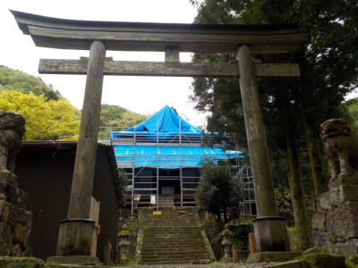
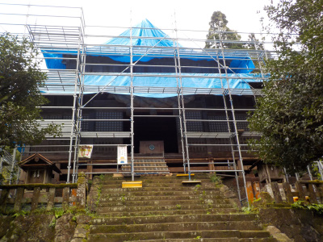
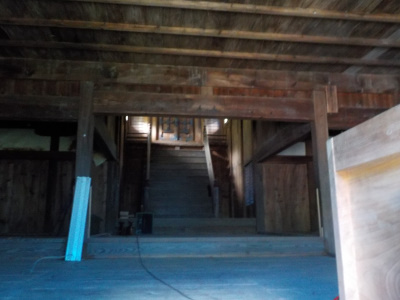
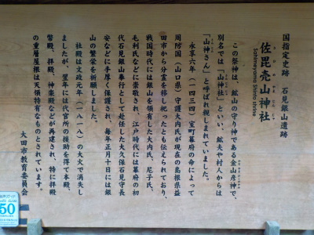

佐毘賣山神社から和楽器の音がしてました。
2019/05/01
龍源寺間歩の出口近くにある神社です。
笛の音が聞こえてきたので、何かやっているのかと思い寄ってみました。

只今工事中。何もしてませんでした。

扉が開いているので、ちょっと覗いてみました。

中にはあまり物がありませんでした。工事中なので当然ですね。
賽銭箱の後ろにCDラジカセがあり、そこから音楽が流れていました。

神社の詳しいことが書いてありました。
速く改修工事が終わるといいですね。